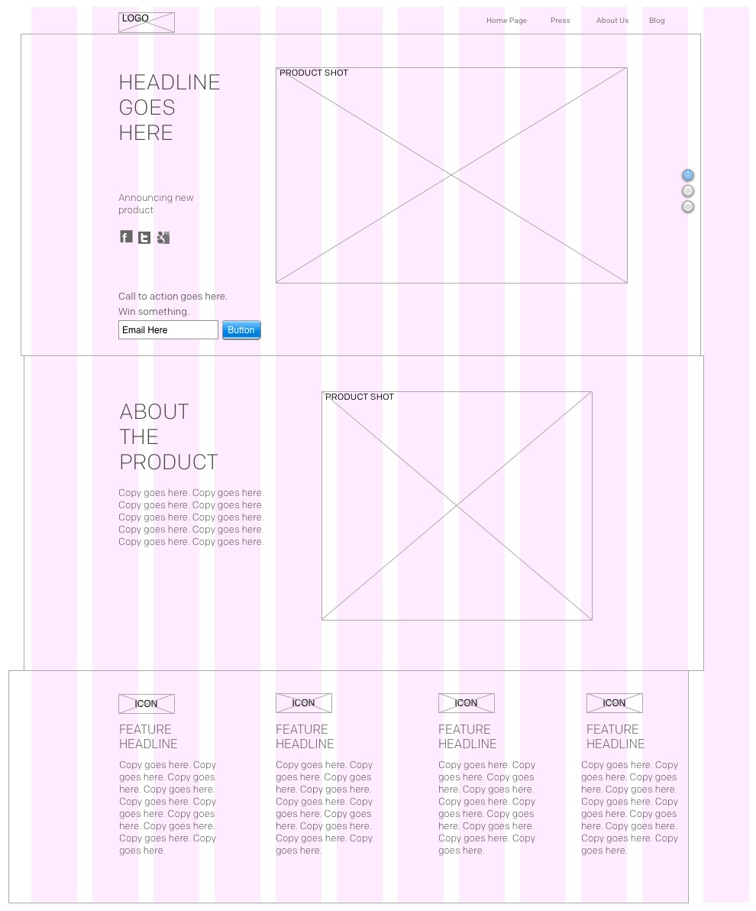

Similar
Different
I am working to build a product website for a client of mine. The following sketches give a good idea of the overall site flow
The above-the-fold portion of the home page aims to get users to enter their email address and to present the product overview.
The "About the product page" is essentially a page to tell incoming press about all the key aspects of the product. It includes a product image along with key copy. Additionally there are multiple key features listed underneath.
I didn't include wireframes for the About Us and Blog portions of the site since they will open up as separate pages. About Us goes to the corporate site. Blog goes to a WordPress blog site.
Here is a jpeg that shows the wireframe that I built in OmniGraffle.
The Omnigraffle sketches give a strong sense of focal point by limiting the amount of information in each section. I tried to build a hierarchy where we hit the main image and key information first and then slowly reveal deeper information below. As for balance, I wanted to have only two columns throughout so that there was clear balance between pages